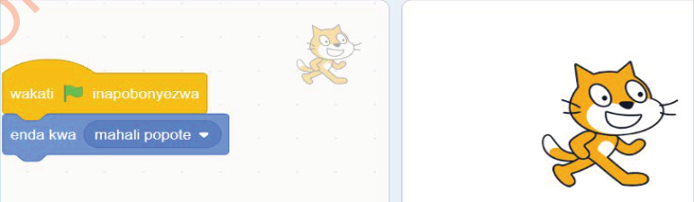

6.Bofya au tumia mishale kibendera cha ‘Anza’ ili kucheza mchezo wako.
7.Endelea kucheza ili kuona namna ‘Sprite’ anavyozunguka. Unaweza badilisha digrii au nyuzi kutoka 15 kwenda 45 ili kuona zaidi jinsi Sprite anavyozunguka. Je, umeona au umesikia au umehisi nini baada ya kubadili digrii au nyuzi?
Kazi ya kufanya namba 8: Kuunda mchezo wa nenda mahali popote
Kuunda mchezo wa nenda mahali popote, fuata hatua zifuatazo:
Hatua
- Bofya au tumia mishale menyu ya bloku za ‘Matukio’.
- Buruta au tumia mishale na dondosha bloku ya ‘wakati inapobonyezwa’ kwenye eneo la kuandikia.
- Bofya au tumia mishale menyu ya bloku za ‘Mwendo’.
- Buruta au tumia mishale na dondosha bloku ya ‘enda kwa (mahali popote)’ kwenye eneo la kuandikia.
- Unganisha bloku ya ‘enda kwa (mahali popote)’ na bloku ya ‘wakati inapobonyezwa’ kama inavyoonekana katika Kielelezo namba 28.

Maelezo ya picha: Bloku ya wakati inapobonyezwa imeunganishwa na bloku ya enda kwa mahali popote. Paka wa Scratch anaonekana kwenye jukwaa.Kielelezo namba 28: Kuunganisha bloku ya enda kwa (mahali popote) na wakati inapobonyezwa.